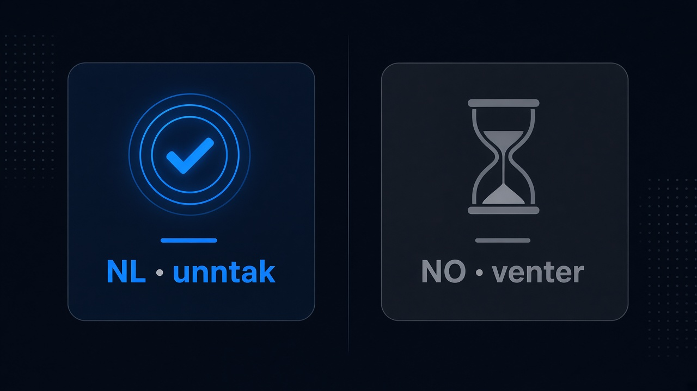
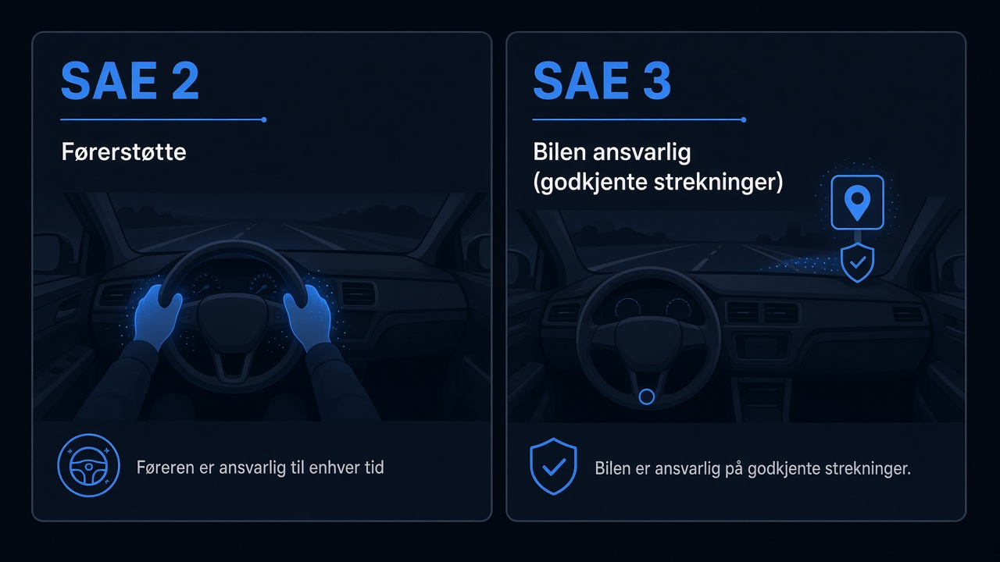

Nederland åpnet unntak for Teslas førerstøtte. Norge venter fortsatt på «minstekravene»
På Arendalsuka 2026 gikk ordstyreren rett på det Tesla-eiere allerede snakker om: nordmenn er sinte fordi bilen har mer førerstøtte enn de får lov til å bruke. I Nederland er det annerledes.
«Vi har diskusjoner om Tesla-eiere i Norge som er sinte fordi de ikke får ta i bruk det bilen har å tilby av førerstøttesystem. Mens i Nederland har de nå godkjent at de får lov til å i større grad ta i bruk,» sa ordstyreren.
Stein Helge Mundal (SVV kjøretøy) forklarte mekanikken uten å snakke bort frustrasjonen:
«Det Nederland har gjort er at de har brukt en unntaksbestemmelse i et EU-regelverk som kan brukes for ny teknologi. Dette systemet til Tesla tilfredsstiller et internasjonalt regelverk for førerstøttesystemer, men de har gitt noen spesielle unntak, blant annet at systemet kan tas i bruk utenfor motorveier».
Altså: Tesla-systemet oppfyller det internasjonale førerstøtteregelverket, ifølge SVV på scenen. Nederland bruker EU-unntak for å slippe mer funksjon. Norge gjør det ikke.

Hva SVV er skeptisk til
Mundal listet unntakene Norge ikke vil følge — blant annet innstillinger for å holde fartsgrenser, og sideveis akselerasjonskrav på glatt føre, særlig i rundkjøringer. Minstekrav må være oppfylt før systemene tillates på norske veier. Så lenge teknologien har feilmargin i nominelle tester, må en fører være klar til å ta over.
Det er ærlig myndighetsspråk. Det er også en politisk prioritering: heller vente enn å bruke det samme unntaksrommet Nederland allerede har brukt. For eiere som har betalt for funksjonene, merkes det som stillstand.
Ingen selvkjørende biler i Norge — men level 3 finnes i Tyskland
Panelet ryddet i språket. Sander Aksel Guttormsen (Mercedes-Benz Norge): i Norge tilbys i dag opptil level 2 — «Det er ikke selvkjøring heller, førerassistanse». Mundal nikket: «Det er ikke noen biler i Norge som er selvkjørende. … Det er førerstøttesystem».
Til sammenligning: Mercedes Drive Pilot (level 3) kjører allerede på godkjente strekninger i Tyskland, opptil 95 km/t. Da er bilen juridisk ansvarlig for kjøringen på de strekningene. «Disse mulighetene skal også bli godkjent i Norge,» sa Guttormsen — uten dato.
Guro Ranes (SVV trafikksikkerhet) advarte mot overgangsfasen: «når det blir solgt inn som selvkjørende, er det skummelt». Mercedes sier de ikke markedsfører level 2 som selvkjøring. «Men … de benevnelsene blir jo brukt,» innrømmet Guttormsen.
For lesere her: produktnavnet Full Self-Driving / FSD ble ikke sagt i opptaket. Det panelet diskuterte, er Teslas førerstøtte, EU-unntak og SAE-nivåer. Det er samme vei mot norsk aktivering av mer avansert førerstøtte — uten at noen på scenen lovet ja for norske kunder.

Føre-var kan koste liv
Filosof Henrik Syse åpnet med spørsmålet som rammer hele debatten: hvor mange liv må teknologien redde før vi tør slippe rattet?
Føre-var er riktig i utgangspunktet, sa han — men «kan trekkes for langt». Da venter vi for lenge med det som er riktig. Autonomi og førerstøtte skal gjøre oss til bedre trafikanter, ikke latere: det handler om «mennesker og menneskers verdighet».
Ranes koblet det til nullvisjonen: teknologi er «helt nødvendig» for å komme nærmere null drepte og hardt skadde. Nye, moderne biler er generelt sikrere — førerstøtte og passiv sikkerhet — men det er vanskelig å isolere effekten av systemene alene i statistikken.
Vegdirektør Ingrid Dahl Hovland snakket om en overgangsfase på «20 år» fram til selvkjøring. Det er et tidsperspektiv for samfunnet — ikke et argument for at Norge skal stå stille mens Nederland bruker unntakene.
Tester for kollektiv — ikke for vanlige eiere
Mundal var tydelig på at norske utprøvinger i dag primært gjelder kollektivkjøretøy med unntakstillatelser. Han så «litt stor risiko» om «normale forbrukere» skal prøve ut «selvkjørende systemer» på egen hånd uten at utvikleren er involvert.
Det er et reelt sikkerhetspoeng. Det forklarer ikke hvorfor naboland allerede har åpnet mer for det samme Tesla-systemet SVV sier oppfyller internasjonalt førerstøtteregelverk. Unntaksbestemmelsen finnes i EU-regelverket. Nederland har brukt den. Norge har ikke.
Se også norsk status, Belgia vs. Norge, TCMV-estimat og historie.